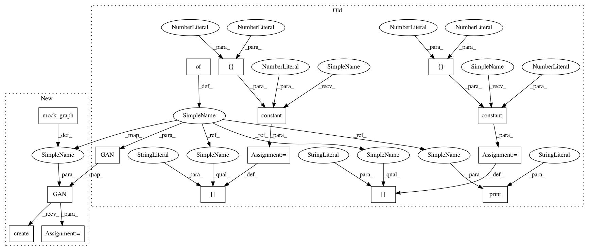

9332d1d8fee62ad6d2d0e7f066917082e3b534e3,tests/losses/softmax_loss_test.py,SoftmaxLossTest,test_create,#SoftmaxLossTest#,17
Before Change
def test_create(self):
with self.test_session():
graph = {}
graph["d_real"] = tf.constant(0, shape=[2,2])
graph["d_fake"] = tf.constant(0, shape=[2,2])
print("gcraph", graph)
loss = SoftmaxLoss(hg.GAN(graph=graph), loss_config)
d_loss, g_loss = loss.create()
d_shape = loss.ops.shape(d_loss)
g_shape = loss.ops.shape(g_loss)
After Change
def test_create(self):
with self.test_session():
graph = mock_graph()
gan = hg.GAN(graph=graph)
gan.create()
loss = SoftmaxLoss(gan, loss_config)
d_loss, g_loss = loss.create()
d_shape = loss.ops.shape(d_loss)
g_shape = loss.ops.shape(g_loss)
self.assertEqual(sum(d_shape), 1)
In pattern: SUPERPATTERN
Frequency: 5
Non-data size: 15
Instances
Project Name: HyperGAN/HyperGAN
Commit Name: 9332d1d8fee62ad6d2d0e7f066917082e3b534e3
Time: 2017-06-06
Author: mikkel@255bits.com
File Name: tests/losses/softmax_loss_test.py
Class Name: SoftmaxLossTest
Method Name: test_create
Project Name: HyperGAN/HyperGAN
Commit Name: 9332d1d8fee62ad6d2d0e7f066917082e3b534e3
Time: 2017-06-06
Author: mikkel@255bits.com
File Name: tests/losses/wasserstein_loss_test.py
Class Name: WassersteinLossTest
Method Name: test_create
Project Name: HyperGAN/HyperGAN
Commit Name: 2a64b6e4df236b15b7c28e9a7bec31fba2ab8061
Time: 2017-06-07
Author: martyn@255bits.com
File Name: tests/losses/lamb_gan_loss_test.py
Class Name: LambGanLossTest
Method Name: test_create
Project Name: HyperGAN/HyperGAN
Commit Name: 9332d1d8fee62ad6d2d0e7f066917082e3b534e3
Time: 2017-06-06
Author: mikkel@255bits.com
File Name: tests/losses/least_squares_loss_test.py
Class Name: LeastSquaresLossTest
Method Name: test_create
Project Name: HyperGAN/HyperGAN
Commit Name: 2a64b6e4df236b15b7c28e9a7bec31fba2ab8061
Time: 2017-06-07
Author: martyn@255bits.com
File Name: tests/losses/boundary_equilibrium_loss_test.py
Class Name: BoundaryEquilibriumLossTest
Method Name: test_create
Project Name: HyperGAN/HyperGAN
Commit Name: 9332d1d8fee62ad6d2d0e7f066917082e3b534e3
Time: 2017-06-06
Author: mikkel@255bits.com
File Name: tests/losses/softmax_loss_test.py
Class Name: SoftmaxLossTest
Method Name: test_create